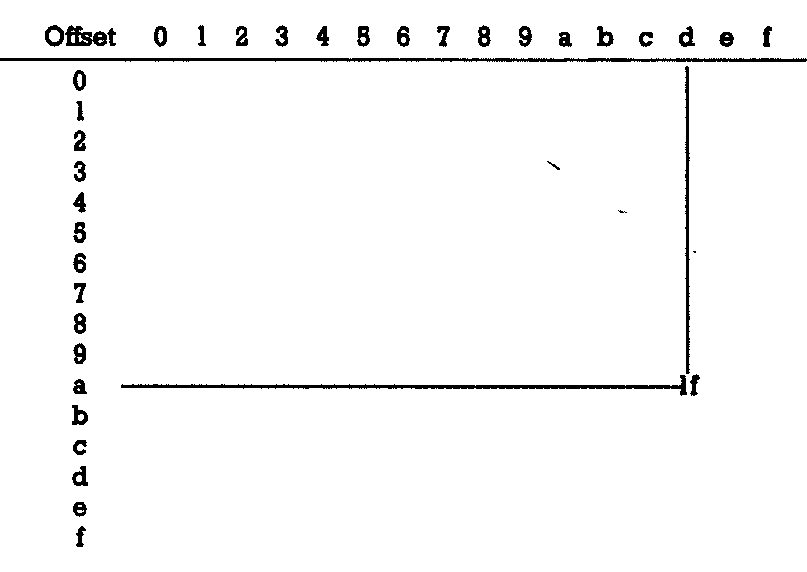

Tips und Tricks zu Protext 128 (Teil 1)
Sowohl der Preis als auch die Leistungsmerkmale haben Protext 128 zu einem sehr verbreiteten Textverarbeitungssystem auf dem C 128 gemacht. Wir zeigen Ihnen in dieser ersten Folge, wie Sie Ihren Drucker optimal an Protext 128 anpassen können.
Betrachtet man anerkannt professionelle Textverarbeitungsprogramme wie etwa Wordstar 3.0, so fällt auf, daß eines der Merkmale solcher Programme ihre extreme Flexibilität im Hinblick auf die Anpassung an die verschiedensten Druckertypen ist. Leider ergibt sich hierbei oft für den reinen Anwender solcher Programme das Problem, das Textverarbeitungsprogramm auf seinen speziellen Drucker optimal anzupassen, um so aus diesem wichtigen Peripheriegerät »das Letzte« herausholen zu können. Im folgenden Bericht soll am Beispiel der Anpassung des Star SG-10 mit eingebautem Original-Star-Interface dargestellt werden, welche Schritte im Einzelnen erforderlich sind, einen Druckertreiber für Protext 128 zu erstellen, mit dem es möglich ist, die meisten Funktionen dieses weitverbreiteten Druckers zu nutzen. Da viele der Star-Drucker-Codes auch für die Epson-Drucker und kompatible Drucker anderer Marken gelten, sollten auch Besitzer anderer Geräte aus dieser Anleitung ihren Nutzen ziehen können.
Erstellen einer Protext 128-Kopie
Laden Sie zunächst von der Seite eins der Original-Protext 128-Diskette das Programm »COPY.PROTEXT« und erstellen Sie eine Startdiskette sowie eine Arbeitsdiskette, mit denen Sie dann ohne Gefahr für das Originalprogramm weiterarbeiten können. Da die Erstellung dieser beiden Disketten dialoggesteuert abläuft und diese außerdem im Handbuch genau beschrieben ist, dürften hierbei keine Probleme auftauchen.
Laden von Protext 128
Legen Sie die Protext 128-Startdiskette in Ihr Laufwerk und geben Sie entweder im C 128-Modus den Befehl BOOT ein und drücken Sie die <RETURN>-Taste oder einfach den <RESET>-Knopf auf der rechten Seite des Computers, Protext 128 wird dann automatisch geladen. Nachdem die grüne LED des Floppy-Laufwerks erloschen ist, nehmen Sie die Startdiskette heraus, diese brauchen Sie nicht mehr, und legen Sie dafür die Arbeitsdiskette ein.
Anlegen von Druckertreibern
Theoretisch könnten Sie nun einen der Druckertreiberladen, ihn entsprechend verändern und wieder auf die Diskette zurückschreiben. Dies ist jedoch nicht zu empfehlen, da hierdurch der ursprüngliche Druckertreiber überschrieben und nicht mehr in seiner ursprünglichen Form zur Verfügung stehen würde. Daher sollten Sie folgendermaßen vorgehen:
a) Drücken Sie die <ESC>-Taste
b) Auf die Frage »Befehl % halten Sie die <SHIFT>-Taste gedrückt und drücken zusätzlich den Buchstaben <T>
c) Nun werden Sie nach dem Namen des zu ändernden Druckertreibers gefragt
d) Wenn Sie nun <RETURN> drücken, zeigt Ihnen das Programm, welche Druckertreiber im Augenblick auf Diskette gespeichert sind
e) Wählen Sie unbedingt einen Namen, der nicht unter den aufgeführten ist, zum Beispiel »treiber l« Geben Sieden Namen inKleinbuchstaben ein und drücken Sie wieder die <RETURN>-Taste, wodurch eine Kopie des aktuellen Treibers unter dem Namen »treiber l t« aufihrer Arbeitsdiskette gespeichert wird
f) Wiederholen Sie die Vorgänge a) bis e) zweimal, wobei Sie unter e) als Treibernamen »treiber 2« beziehungsweise »treiber 3« angeben. Jetztstehen Ihnen aufIhrer Arbeitsdiskette drei Druckertreiber zur Verfügung, die Sie nach Herzensluständern können, ohne die Originaltreiber eventuell zu zerstören.
Anpassen des Druckertreibers
a) Drücken Sie die <ESC>-Taste
b) Auf die Frage »Befehl % halten Sie die <SHIFT>-Taste gedrückt und drücken den Buchstaben »I«
c) Nun werden Sie nach dem Namen des zu ändernden Druckertreibers gefragt
d) Geben Sie »treiber l« in Kleinbuchstaben ein. Die erste Angabe auf Ihrem Bildschirm zeigt Ihnen nun, daß Sie sich im Menü »Ändern Druckertreiber« befinden. Die nächste Zeile gibt den aktuellen Treiber, in Ihrem Fall streiber l« an. Die nächsten Zeilen zeigen die einzelnen Wahlmöglichkeiten innerhalb des Menüs, die Sie durch Eingabe der entsprechenden Zahl anwählen können. Im einzelnen sind dies:
1) Allgemeine Parameter
2) Wandlungstabelle
3) Funktionssteuerung
4) Sonderfunktionen
5) Tastenredefinitionen
6) Treiber zurückschreiben
7) Programm verlassen
Sollten Sie nun zum Beispiel <7> drücken, befinden Sie sich wieder im Textprogramm. Drücken Sie statt dessen <6>, wird Ihr Druckertreiber mit den von Ihnen vorgenommenen AÄnderungen unter dem gleichen Namen, hier »treiber I« auf Diskette zurückgeschrieben. Sie können dies gefahrlos ausprobieren, da bisher keine Veränderungen vorgenommen wurden, und außerdem unter den Namen »treiber 2« beziehungsweise »treiber 3« noch zwei unververänderte Treiberkopien auf Diskette vorhanden sind. Kommen wir nun endlich zur eigentlichen Druckeranpassung. Dazu empfiehltessich, die einzelnen Menüpunkte in der numerischen Reihenfolge durchzugehen, wobei dann die einzelnen Parameter jeweils genauer besprochen werden.
Menüpunkt 1) Allgemeine Parameter
Drücken Sie im Menü »Andern Druckertreiber« die Taste <]>, wodurch Sie in das Untermenü »Allgemeine Parameter« gelangen. Der Monitor zeigt dabei folgendes Bild:
| IEEE-Adresse Daten: | xx |
| Sek.-Adresse Daten: | xxx |
| IEEE-Adresse Steuerzeichen: | xx |
| Sek.-Adresse Steuerzeichen: | xxx |
| Standard: | |
| Zeilen pro Seite: | xx |
| Zeilenabstand: | xx |
| Zusatzzeilen bei Seitenvorschub: | xx |
| Blattwechsel bei Seitenvorschub: | c |
| Pausenfreigabe: | c |
| Alles richtig (j/n) |
Hierbei bedeutet »xx«, daß eine beliebige zweistellige, »XxxX« daß eine beliebige dreistellige Zahl und »c«, daß entweder Buchstabe »J« oder Buchstabe »N« hier eingesetzt werden kann. Die Zahlen werden mit führenden Nullen eingegeben, zum Beispiel »005«, um die Sekundäradresse 5 festzulegen. Da wir die allgemeinen Parameter ändern wollen, beantworten wir die Frage »Alles richtig (/n)« mit »N« für »Nein«. Der Cursor springtin die erste Menüzeile und erwartet von Ihnen die Eingabe der
IEEE-Adresse-Daten.
Jedes Commodore-Peripheriegerät (Drucker, Floppy, Bildschirm, etc.) wird über eine bestimmte Geräteadresse angesprochen. Das entsprechende Gerät erkennt aufgrund dieser Geräteadresse, daß die vom Computer gesendeten Daten für es bestimmt sind. Bei fast allen Druckern ist diese Geräteadresse die »4«. Werden jetzt vonihrem Computer Daten, das heißt Text, unter der Adresse »4« gesendet, empfängt der Drucker diese Daten und gibt sie aus. Geben Sie daher den Wert »04« ein und drücken Sie die <RETURN>-Taste. Der Cursor springt in die nächste Zeile, zur
Sek.-Adresse Daten.
Mit der Sekundäradresse können Sie beeinflußen, in welchem Modus Ihr Interface arbeitet. Das Handbuch zum Interface zeigt, welchen Modus die einzelnen Sekundäradressen jeweils einschalten. Da die Commodore-Drucker mit der Sekundäradresse 7 in den Groß/ Kleinschrift-Modus versetzt werden, besitzen die meisten Interfaces für Centronics-Drucker ebenfalls diese Funktion unter der gleichen Sekundäradresse, wodurch sich dann der Drucker wie ein original Commodore-Drucker verhält (mit entsprechend eingeschränkten Möglichkeiten). Es empfiehlt sich daher, den Modus zu wählen, bei dem die Daten unverändert zum Drucker übertragen werden, mit automatischem Zeilenvorschub nach jedem Zeilenende. Häufig wird dieser Modus als »ITransparentdruck« bezeichnet. Für den Star SG-10 geben Sie »005« für Sekundäradresse 5 ein und drücken <RETURN>. Die nächste Zeile fragt nach der
IEEE-Adresse Steuerzeichen.
Dieser Wert bestimmt, unter welcher Adresse der Drucker in die Bereitschaft versetzt wird, Steuerzeichen, die zum Beispiel dazu dienen können, bestimmte Schriftarten oder den Zeilenabstand einzustellen, zu empfangen. In den meisten Fällen ist diese Adresse identisch mit der Adresse, unter der die Textdaten empfangen werden. Geben Sie darum auch hier »04« ein und drücken anschließend die <RETURN>-Taste. Sie kommen nun zum Punkt
Sek.-Adresse Steuerzeichen.
Auch hier ist wichtig, den Wert für diese Sekundäradresse so zu wählen, daß die Daten unverändert zum Drucker gelangen. Wie wir schon vorher gesehen haben, muß für das Original-Star-Interface »05« eingegeben werden und anschließend die <RETURN>-Taste gedrückt werden. Danach gelangt manzur Abfrage des
Standard: Zeilen pro Seite
Der Wert, der hier von Ihnen eingegeben wird, hat nichts mit der Länge des einzelnen Blattes Papier zu tun. Vom Programm wird hierfür immer eine Länge von 72 Zeilen bei normalem Zeilenabstand angenommen. Von Ihnen erwartet man die Angabe, nach wievielen Druckzeilen automatisch ein Seitenvorschub erfolgen soll. Das Handbuch zu Protext schlägt 62 Zeilen als Standardwert vor, jedoch empfiehlt sich eher der Wert 72, um das Papier bis zur letzten Zeile ausnutzenzu können, wobeiman im Programm später je nach Bedarf Seitenlänge und Zahl der Druckzeilen mit Hilfe des Formatbefehls »CTRL bp,Seitenlänge,Druckzeilen« entsprechend den Erfordernissen ändern kann. Geben Sie nun »72« ein, dadurch gelangen Sie zum
Zeilenabstand.
In dieser Option stellen Sie den standardmäßigen Zeilenabstand ein. Es gilt die Regel
Zahl *% = Zeilenabstand.
Geben Sie hier zum Beispiel den Wert 4 ein, resultiert dies in einem 2fachen Zeilenabstand, da nach der Formel4*1 = 2ist. Umeinen einfachen Zeilenabstand als Standardwert vorzugeben, brauchen wir daher den Wert2,da2*1%= list. Geben Sie »02« ein und drücken Sie <RETURN>. Nun erwartet man von Ihnen die Eingabe der
Zusatzzeilen bei Seitenwechsel.
Wenn Sie einen Einzelblatteinzug bei Ihrem Drucker verwenden, sollten Sie durch Ausprobieren feststellen, wie oft am Drucker die Taste <LF> (Linefeed) gedrückt werden muß, um das nächste Einzelblatt in die richtige Anfangsposition am Druckkopf zu bringen. Diese Zahl sollten Sie dann eingeben. Im Normalfall werden Sie Endlospapier verwenden, bei dem keine zusätzlichen Zeilenvorschübe erzeugt werden dürfen, darum müssen Sie hier die Zahl »00« eingeben. Nach Drücken der <RETURN>-Taste wird der
Blattwechsel bei Seitenvorschub erfragt.
Hier haben Sie die Möglichkeit, <]J> für »Ja« oder <N> für»Nein«einzugeben. Wählen Sie <]J>, dann stoppt Protext 128 nach Ausdruck einer Seite, gibt Ihnen die Gelegenheit, falls Sie Einzelblätter verwenden, ein neues Blatt Papier einzuspannen und zu justieren und setzterstnach Druck auf die <RETURN>-Taste den Ausdruck fort, um dann am Ende der nächsten Seite wieder anzuhalten, bis schließlich das gesamte Dokument gedruckt ist. Auch bei ausschließlicher Verwendung von Endlospapier könnte es nützlich sein, diese Option zu verwenden, da man nach dem Ausdruck einer Seite diese überprüfen und bei Fehlern eventuell den Druckvorgang unterbrechen, denFehler korrigieren und dann die Seite neu drucken kann. Im allgemeinen wird manjedoch ein Dokument von Anfang bis Ende ohne Pause ausdrucken wollen, so daß es sich hier empfiehlt, <N> für »Nein« einzugeben. Die <RETURN>-Taste führt dann zur Abfrage der
Pausenfreigabe.
Protext 128 bietet die Möglichkeit, mittels Steuerbefehlen den Ausdruck eines Textes zu unterbrechen. Dieser Pausenbefehl wird vom Programm jedoch nur ausgeführt, wenn die Option Pausenfreigabe mit <J> für »Ja« voreingestellt wird. Bei <N> ignoriert das Programm diese Pausenbefehle. Hier sollten Sie <]J> eingeben, da Sie später immer noch entscheiden können, ob Sie innerhalb des Programms den Pausenbefehl verwenden wollen oder nicht, Sie sich andererseits jedoch die Möglichkeit offenhalten, ihn anzuwenden. Nach Drücken von <RETURN> sollte Ihre Bildschirmmaske folgendermaßen aussehen:
| IEEE-Adresse Daten: | 04 |
| Sek.-Adresse Daten: | 005 |
| IEEE-Adresse Steuerzeichen: | 04 |
| Sek.-Adresse Steuerzeichen: | 005 |
| Standard: | |
| Zeilen pro Seite: | 72 |
| Zeilenabstand: | 02 |
| Zusatzzeilen bei Seitenvorschub: | 00 |
| Blattwechsel bei Seitenvorschub: | n |
| Pausenfreigabe: | j |
| Alles richtig (j/n) |
Sollte Ihre Bildschirmmaske mit derangegebenen nicht übereinstimmen, so drücken Sie <N> und wiederholen die Prozedur. Bei Ubereinstimmungführt <J> wieder ins Menü »Ändern Druckertreiber«. Die Eingabe von <2> bringt Sie zum
Menüpunkt 2) Wandlungstabelle.
Um mit der nun erscheinenden Tabelle in sinnvoller Form arbeiten zu können, ist es zunächst erforderlich, sich ein wenig mit den theoretischen Grundlagen der Änsteuerung der einzelnen Druckerzeichen durch den Computer vertraut zu machen. Der Computer ist in der Lage, 256 verschiedene Zeichen an den Drucker zu schicken. Diese Zeichen sind numeriert und zwar in hexadezimaler Form von »00« bis »FF«. Leider entsprechen bei einigen Herstellern die Nummern der Zeichen nicht der allgemeinen Norm (ASCID, so daß es ohne weiteres vorkommen kann, daß der Computer die Nummer eines bestimmten Zeichens an den Drucker überträgt, bei dem unter dem empfangenen Code jedoch ein völlig anderes Zeichen registriert ist. Die Wandlungstabelle zeigt Ihnen, welche Zeichen-Codes der Computer für seine eigenen Zeichen-Codes an den Drucker schickt. Hierzu ein Beispiel: Der hexadezimale interne Computercode für ein Zeichen wäre »ad«, dann suchen Sie in der linken Spalte der Wandlungstabelle das erste Zeichen des Codes und gehen waagerecht nach rechts. In der waagerechten Kopfzeile der Wandlungstabelle suchen Sie das zweite Zeichen des Codes und gehen senkrecht nach unten. Im Schnittpunkt der beiden Linien steht der Code, den der Drucker vom Computer empfängt, in unserem Beispiel also »1f« (Bild 1).

| Offset | 0 | 1 | 2 | 3 | 4 | 5 | 6 | 7 | 8 | 9 | a | b | c | d | e | f |
|---|---|---|---|---|---|---|---|---|---|---|---|---|---|---|---|---|
| 0 | ||||||||||||||||
| 1 | ||||||||||||||||
| 2 | ||||||||||||||||
| 3 | ||||||||||||||||
| 4 | ||||||||||||||||
| 5 | ||||||||||||||||
| 6 | ||||||||||||||||
| 7 | ||||||||||||||||
| 8 | ||||||||||||||||
| 9 | ||||||||||||||||
| a | 1f | |||||||||||||||
| b | ||||||||||||||||
| c | ||||||||||||||||
| d | ||||||||||||||||
| e | ||||||||||||||||
| f |
Wenn Sie nun also feststellen, daß auf dem Bildschirm der von Ihnen eingegebene Text in korrekter Form erscheint, jedoch bei der Druckerausgabe ein Buchstabe nicht dem eingegebenen Buchstaben entspricht, gehen sie folgendermaßen vor: Nehmen Sie Ihr Drucker- oder Ihr Interface-Handbuch. Suchen Sie dort den Tode des Zeichens, das auf dem Drucker ausgegeben wurde. Notieren Sie sich diesen Wert als »Ursprungswert« Suchen Sie in den Handbüchern den Wert des Zeichens, das auf dem Drucker ausgegeben werden soll, und notieren Sie sich diesen Wert als »Neuer Wert«. Suchen Sie innerhalb der Wandlungstabelle den Ursprungswert und ersetzen Sie diesen durch den neuen Wert. Dabei sollten Sie beachten, daß in manchen Handbüchern, so auch im Handbuch zum Original-Star-Interface, das erste Zeichen des Druckercodes in der waagerechten Kopfzeile steht und das zweite Zeichen in der linken senkrechten Spalte zu finden ist, während die Wandlungstabelle von Protext 128 umgekehrt aufgebaut ist. Weitere Schwierigkeiten könnten sich daraus ergeben, daß in manchen Handbüchern statt hexadezimaler Werte, wie sie von Protext erwartet werden, dezimale Werte stehen. Darum für diejenigen unter Ihnen, die mit der hexadezimalen Rechnungsart noch nicht so vertraut sind, eine Umrechnungstabelle dezimal/ hexadezimal für die Zahlen von 0 bis 255 beziehungsweise 00 bis ff (Bild 2).
| 0 | 1 | 2 | 3 | 4 | 5 | 6 | 7 | 8 | 9 | a | b | c | d | e | f | |
|---|---|---|---|---|---|---|---|---|---|---|---|---|---|---|---|---|
| 0 | 0 | 1 | 2 | 3 | 4 | 5 | 6 | 7 | 8 | 9 | 10 | 11 | 12 | 13 | 14 | 15 |
| 1 | 16 | 17 | 18 | 19 | 20 | 21 | 22 | 23 | 24 | 25 | 26 | 27 | 28 | 29 | 30 | 31 |
| 2 | 32 | 33 | 34 | 35 | 36 | 37 | 38 | 39 | 40 | 41 | 42 | 43 | 44 | 45 | 46 | 47 |
| 3 | 48 | 49 | 50 | 51 | 52 | 53 | 54 | 55 | 56 | 57 | 58 | 59 | 60 | 61 | 62 | 63 |
| 4 | 64 | 65 | 66 | 67 | 68 | 69 | 70 | 71 | 72 | 73 | 74 | 75 | 76 | 77 | 78 | 79 |
| 5 | 80 | 81 | 82 | 83 | 84 | 85 | 86 | 87 | 88 | 89 | 90 | 91 | 92 | 93 | 94 | 95 |
| 6 | 96 | 97 | 98 | 99 | 100 | 101 | 102 | 103 | 104 | 105 | 106 | 107 | 108 | 109 | 110 | 111 |
| 7 | 112 | 113 | 114 | 115 | 116 | 117 | 118 | 119 | 120 | 121 | 122 | 123 | 124 | 125 | 126 | 127 |
| 8 | 128 | 129 | 130 | 131 | 132 | 133 | 134 | 135 | 136 | 137 | 138 | 139 | 140 | 141 | 142 | 143 |
| 9 | 144 | 145 | 146 | 147 | 148 | 149 | 150 | 151 | 152 | 153 | 154 | 155 | 156 | 157 | 158 | 159 |
| a | 160 | 161 | 162 | 163 | 164 | 165 | 166 | 167 | 168 | 169 | 170 | 171 | 172 | 173 | 174 | 175 |
| b | 176 | 177 | 178 | 179 | 180 | 181 | 182 | 183 | 184 | 185 | 186 | 187 | 188 | 189 | 190 | 191 |
| c | 192 | 193 | 194 | 195 | 196 | 197 | 198 | 199 | 200 | 201 | 202 | 203 | 204 | 205 | 206 | 207 |
| d | 208 | 209 | 210 | 211 | 212 | 213 | 214 | 215 | 216 | 217 | 218 | 219 | 220 | 221 | 222 | 223 |
| e | 224 | 225 | 226 | 227 | 228 | 229 | 230 | 231 | 232 | 233 | 234 | 235 | 236 | 237 | 238 | 239 |
| f | 240 | 241 | 242 | 243 | 244 | 245 | 246 | 247 | 248 | 249 | 250 | 251 | 252 | 253 | 254 | 255 |
Wenn Sie nun zum Beispiel die Dezimalzahl 109 in eine Hexadezimalzahl verwandeln wollen, suchen Sie in dieser Tabelle die Zahl 109. Ziehen Sie eine waagerechte Linie zum äußeren linken Rand, dort finden Sie den Wert »6«, den ersten Teil Ihrer Hexadezimalzahl. Gehen Sie nun zurück zur Zahl 109 innerhalb der Tabelle, ziehen Sie eine senkrechte Linie zum oberen Rand. Dort finden Sie den Wert »d«, den zweiten Teil Ihrer Hexadezimalzahl. Dezimal »10% entspricht im Hexadezimalsystem also »6d«. Wenn Sie eine zweistellige Hexadezimalzahl wie zum Beispiel »ae« in eine Dezimalzahl verwandeln wollen, nehmen Sie den ersten Wert der Zahl, »a«, suchen diesen Wert in der äußersten linken Spalte und ziehen eine waagerechte Linie nach rechts. Suchen Sie nun den zweiten Wert, »e«, in der Kopfzeile und ziehen eine senkrechte Linie nach unten. Am Kreuzungspunkt der beiden Linien steht die gesuchte Dezimalzahl, in diesem Fall »174«. Sie sollten, wenn Sie sich mit der Druckeranpassung vertraut gemacht haben, ruhig einmal versuchen, Ihren Drucker Zeichen ausgeben zu lassen, die Sie normalerweise nicht erreichen können. Über die Code-Wandlungstabelle ist zum Beispiel ohne weitere Probleme der Ausdruck der Star-Sonderzeichen möglich. Dies gilt sinngemäß für andere Drucker. Um Sie fürs erste nicht zu sehr mit Informationen zu überhäufen, hier nun die Wandlungstabelle für Ihren Druckertreiber »treiber 1« (Bild 3).
| Offset | 0 | 1 | 2 | 3 | 4 | 5 | 6 | 7 | 8 | 9 | a | b | c | d | e | f |
|---|---|---|---|---|---|---|---|---|---|---|---|---|---|---|---|---|
| 0 | 01 | 02 | 03 | 04 | 05 | 06 | 07 | 08 | 09 | 00 | 0b | 0c | 0d | 0e | 0f | |
| 1 | 10 | 11 | 12 | 13 | 14 | 15 | 16 | 17 | 18 | 19 | 1a | 1b | 1c | 1d | 1e | 1f |
| 2 | 20 | 21 | 22 | 23 | 24 | 25 | 26 | 27 | 28 | 29 | 2a | 2b | 2c | 2d | 2e | 2f |
| 3 | 30 | 31 | 32 | 33 | 34 | 35 | 36 | 37 | 38 | 39 | 3a | 3b | 3c | 3d | 3e | 3f |
| 4 | 60 | 61 | 62 | 63 | 64 | 65 | 66 | 67 | 68 | 69 | 6a | 6b | 6c | 6d | 6e | 6f |
| 5 | 70 | 71 | 72 | 73 | 74 | 75 | 76 | 77 | 78 | 79 | 7a | 7b | 7c | 7d | 7e | 7f |
| 6 | 60 | 61 | 62 | 63 | 64 | 65 | 66 | 67 | 68 | 69 | 6a | 6b | 6c | 6d | 6e | 6f |
| 7 | 70 | 71 | 72 | 73 | 74 | 75 | 76 | 77 | 78 | 79 | 7a | 5b | 5c | 5d | 7e | df |
| 8 | ||||||||||||||||
| 9 | ||||||||||||||||
| a | 20 | a1 | a2 | a3 | a4 | a5 | a6 | a7 | a8 | a9 | aa | 20 | a6 | b9 | a7 | a7 |
| b | aa | ae | a2 | b3 | a3 | a8 | c1 | b6 | b7 | 20 | 20 | 7b | 7c | 7d | 7e | bf |
| c | 40 | 41 | 42 | 43 | 44 | 45 | 46 | 47 | 48 | 49 | 4a | 4b | 4c | 4d | 4e | 4f |
| d | 50 | 51 | 52 | 53 | 54 | 55 | 56 | 57 | 58 | 59 | 5a | 5b | 5c | 5d | d2 | 5f |
| e | e0 | e1 | e2 | e3 | e4 | e5 | e6 | e7 | e8 | e9 | ea | eb | ec | ed | ee | ef |
| f | f0 | f1 | f2 | f3 | f4 | f5 | f6 | f7 | f8 | f9 | fa | fb | fc | fd | fe | ff |
Ändern Sie die Zahlen entsprechend, bis Wandlungs- und Mustertabelle übereinstimmen. Für die leeren Stellen der Mustertabelle geben Sie in der Wandlungstabelle »00« ein. Wenn sie die notwendigen Veränderungen vorgenommen haben, beantworten Sie die Frage, ob alles richtig ist, mit <]J> und Sie gelangen wieder ins Menü»Andern Druckertreiber«. Durch Eingabe der Zahl <3> gelangen Sie zum
Menüpunkt 3) Funktionssteuerung.
Hierbei erscheint eine leere Maske aufIhrem Monitor.
Die Pärchen von Nullen stehen in dieser Tabelle jeweils für zweistellige hexadezimale Zahlen. »Einschaltung« bedeutet hierbei, daß der Drucker, bevor er seine Arbeit beginnt, einen Steuerbefehl bekommt, der ihn zum Beispiel auf eine bestimmte Schriftart umschaltet. Die entsprechenden Hexadezimal-Codes finden Sie im Star-Handbuch auf den Seiten 169 bis 21l. Wenn der Drucker jeweils zu Beginn des Ausdrucks in Near Letter-Quality (NLQ) umgeschaltet werden soll, geben Sie die Sequenz »lb 42 04« ein. In der Zeile »Ausschaltung« würde er mit der Sequenz »lb 42 05« wieder auf Normalschrift umgeschaltet. Aufgrund größerer Flexibilität empfiehlt es sich jedoch, die ersten drei Zeilen unbesetzt (00) zu lassen und die entsprechenden Umschaltungen im Text vorzunehmen. Bei»Sequenz pro Zeile« kann ein Hexadezimal-Code eingegeben werden, der nach jedem Zeilenvorschub an den Drucker geschickt wird. So könnte der linke Rand grundsätzlich um eine bestimmte Anzahl von Leerzeichen nach rechts verschoben werden, indem man pro Leerzeichen den Code »20« eingibt, jedoch empfiehlt es sich eher, auch diese Zeile freizulassen. »Sequenz Seitenwechsel« sendet die in der Maske definierte Seauenz bei jedem Seitenwechsel. Hier ist eine der Möglichkeiten, die im Drucker eingebaute Glocke ertönen zulassen, indem der Code »07« gesendet wird. Alle Drucker, die einen eigenen Steuercode zum Unterstreichen besitzen, gehören zur Typklasse »02«, wenn der Steuercode für Aussschalten der Unterstreichung sich von dem für das Einschalten unterscheidet. Zu dieser Gruppe von Druckern gehört auch der SG-10. Eingeschaltet wird hier die Unterstreichung mit »lb 2d Ol«, ausgeschaltet wird sie mit »lb 2d 00«. Geben Sie nun diese Werte ein. Die gleiche Typisierung wie beim Unterstreichen finden wir auch beim Fettdruck. Auch hier gehört Ihr Drucker zur Typklasse »02«. Normalerweise würden Sie nun im Handbuch die Seauenzen für »Fettdruck einschalten« und »Fettdruck ausschalten« suchen und entsprechend eingeben. Da Fettdruck jedoch bei Superscript- oder Subscript-Zeichen unwirksam ist, empfiehlt es sich, statt der Fettdruck-Sequenz hier die Sequenz für Doppeldruck einzusetzen, die mit »1b 47« ein- und mit »1b 48« ausgeschaltet wird und auf alle Schriftarten außer NLO wirkt. Eingeschaltet wird der Doppeldruck im Text dann mit der Sequenz für Fettdruck, <CTRL+F>. Die nächsten Zeilen geben dem Drucker Informationen darüber, wie er Leerzeichen senden soll. Die einfachste Möglichkeit besteht darin, einfach dasZeichen für »Space«(20)zusenden, dasjedesmal den Druckkopf um ein Leerzeichen bewegt, und keiner speziellen Ein- oder Ausschaltsequenz bedarf, was bedeutet, daß die Länge der Einschaltsequenz »00«, die der eigentlichen Sequenz »Ol« und die der Ausschaltsequenz»00Q«ist (Bild 4).
Punkte/Space: 01
Ein: 00 00 00 00 00 00 00 00 00 00 00 00 00 00 00
Sequenz: 20 00 00 00 00 00 00 00 00 00 00 00 00 00 00
Aus: 00 00 00 00 00 00 00 00 00 00 00 00 00 00 00
Längen: 00 01 00
Dies ist jedoch inmanchen Fällen nachteilig. Hierzu ein Beispiel:
Der Mann schläft. Wird dieser Satz im Blocksatz, das heißt links- und rechtsbündig, ausgedruckt und die Zeilenlängevorgabe ist 18, stehen, dafür Zeichen 15Einheiten verbraucht werden, für die zwei Leerstellen zwischen den Wörtern noch drei Einheiten zur Verfügung, wodurch einmal zwei Leerstellen, einmal nur eine Leerstelle zwischen den Wörtern wäre:
Der**Mann*schläft.
oder
Der*Mann**schläft.
Dadurch entsteht ein zerrissenes Schriftbild, das sich jedoch ohne weiteres vermeiden läßt, indem wir einen Leerschritt in sechs Einzelschritte zerlegen, wodurch innerhalb einer Zeile unterschiedliche Zahlen von Leerzeichen zwischen den Wörtern ausgeglichen werden. Dies geschieht durch den Steuercode, der dem Drucker signalisiert, daß er ein Grafikleerzeichen empfangen soll, wodurch der Druckerkopf um eine Punktspalte weiterrückt. Sechs solcher Grafikleerzeichen entsprechen einem normalen Leerzeichen. Die Sequenz lautet »1b 4b 01 00 00«. Eine spezielle Ein- oder Ausschaltsequenz ist nicht erforderlich, hier bleibt die Reihe von Nullenerhalten, damit ist die Länge der Einschaltseqauenz »00«, die der Steuersequenz »05«, die der Ausschaltsequenz »00«. Nun ergibt sich folgender Ausdruck unseres Beispielsatzes:
Der Mann schläft.
Die Gesamtmaske können Sie Bild 5 entnehmen.
Einschaltung: 00 00 00 00 00 00 00 00 00 00 00
00 00 00 00 00 00 00 00 00 00 00 00 00 00 00
Ausschaltung: 00 00 00 00 00 00 00 00 00 00 00
Sequenz pro
Zeile: 00 00 00 00 00 00 00 00
Sequenz Seiten-
wechsel: 07 00 00 00 00 00 00 00
Unterstrei-
chung: Typ: 02
Ein: 1b 2d 01 00 00 00 00 00
Aus: 1b 2d 00 00 00 00 00 00
Fettschrift: Typ: 02
Ein: 1b 47 00 00 00 00 00 00
Aus: 1b 48 00 00 00 00 00 00
Justierung
Punkte/Space: 06
Ein: 00 00 00 00 00 00 00 00 00 00 00 00 00 00 00
Sequenz: 1b 4b01 00 00 00 00 00 00 00 00 00 00 00 00
Aus: 00 00 00 00 00 00 00 00 00 00 00 00 00 00 00
Längen: 00 05 00
Alles richtig j/n
Sollte dies richtig sein, drücken Sie <]J> und <4>, wodurch Sie zum
Menüpunkt 4) Sonderfunktionen
gelangen, in dem Sie festlegen können, welche Zeichen Steuerzeichen sein sollen und welche Steuerbefehle beim Auftauchen dieser Zeichen im Text an den Drucker geschickt werden sollen. Bei der Auswahl der Steuerzeichen empfiehlt es sich, bestimmte Grafikzeichen nicht zu wählen, da sie für die Umrahmung von Textpassagen oder zur übersichtlichen Darstellung von Tabellen gebraucht werden. Insgesamt können Sie fünfzehn Steuersequenzen definieren. Der folgende Vorschlag ermöglicht Ihnen Ein- und Ausschalten von NLQ, Pica, Elite, Schmal-, Proportional-, Breitschrift, Super-und Subscript, sowie verschiedene Zeilenabstände, wobei fast alle Optionen miteinander kombinierbar sind. Da jede Steuersequenz nicht mehr als drei zweistellige Hexadezimalzahlen umfaßt, geben Sie, nachdem Sie die Frage »Alles richtig j/n« mit <N> beantwortet haben für Längen »O3« ein. Folgen Sie dann den Anweisungen der Tabelle 1.
| Zeichen | Sequenz | Wirkung |
|---|---|---|
| 01 <CBM+←> | 1b 42 04 | NLQ ein |
| 02 <SHIFT+—> | 1b 42 05 | NLQ aus |
| 03 <CBM+—> | 1b 42 01 | Pica ein |
| 04 <←> | 1b 42 02 | Elite ein |
| 05 <CBM+.> | 1b 0f | Schmal ein |
| 06 <CBM+g> | 1b 70 01 | Proportional ein |
| 07 <SHIFT+£> | 1b 70 00 | Proportional aus |
| 08 <£> | 1b 57 01 | Breit an |
| 09 <↑> | 1b 57 00 | Breit aus |
| 10 <-> | 1b 53 00 | Superscript ein |
| 11 <=> | 1b 53 01 | Subscript ein |
| 12 <CBM+?> | 1b 54 | Super/Subscript aus |
| 13 <CBM+↑> | 1b 32 | normaler Zeilenabstand |
| 14 <$> | 1b 33 0c | halber Zeilenabstand |
| 15 <SHIFT+↑> | 1b 33 10 | 2/3 Zeilenabstand |
Beachten Sie bitte, daß sich die Angaben für die verschiedenen Zeichen auf die amerikanische Tastatur, das heißt auf den schwarzen Aufdruck auf den Tasten beziehen. Lassen Sie sich nicht verwirren, wenn im Verlauf der Eingabe Zeichen erscheinen, die nichts mit der gedrückten Tastenkombination zu tun haben, es hat schon seine Richtigkeit. Wenn die Bildschirmmaske korrekt ist, beantworten Sie die Frage »Alles richtig j/n« mit <J>, wodurch Sie wieder ins Hauptmenü »Ändern Druckertreiber kommen und speichern mit <6> ab.
In der nächsten Folge gehen wir auf Menüpunkt 5) Tastenredefinitionen ein und schließen die Druckeranpassung unter Protext 128 ab.
(Henk Driessen/bj)